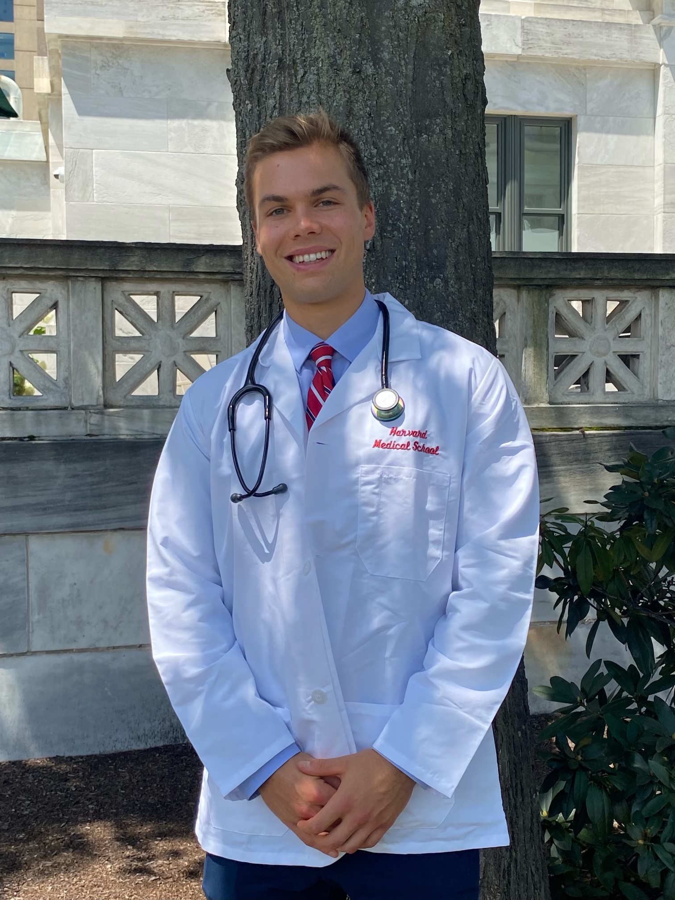

About Me

Hello! My name is Cameron Young and I am an MD/MBA candidate at Harvard Medical School and Harvard Business School. I'm committed to advancing equity in pediatric healthcare by integrating medical expertise with data science and AI, translating research into scalable solutions.
Previously, I was a Churchill Scholar at the University of Cambridge, where I completed an MPhil degree in Medical Sciences with the Caldas Lab at the Cancer Research UK Cambridge Institute. There, I developed personalized therapeutic strategies using genomics and machine learning. I graduated from Northeastern University with dual degrees in chemical engineering and biochemistry.
At Mass General Brigham Innovation, I lead the development of LLM-based tools to optimize medical decision-making and reduce provider bias. During the COVID-19 pandemic, I coordinated a nationwide CDC-funded surveillance registry at Boston Children's Hospital tracking severe pediatric COVID-19 illness across 70+ hospitals. At MIT and Brigham and Women's Hospital, I developed personalized radiation protection devices that have advanced to clinical trials.
My research has resulted in 45+ publications in high-impact journals including the New England Journal of Medicine, JAMA, and Nature family journals, with 3,618+ citations. I was the first recipient of the Churchill Scholarship in Northeastern University's history and was also awarded a Goldwater Scholarship.
Outside of research, I enjoy running (including the 2024 Boston Marathon!), CrossFit, exploring new cultures through travel, and attending concerts. To learn more about my work, explore the sections below or view my full CV here.
Connect with me:
Research
My research career spans multiple disciplines, focusing on translating scientific discoveries into clinical applications that improve patient outcomes.
AI in Healthcare
At Mass General Brigham Innovation, I develop novel large language model (LLM)-based tools to optimize medical decision-making and address provider bias. My work has demonstrated racial, ethnic, and sex bias in AI-driven opioid recommendations (PAIN, 2024) and improved diagnostic accuracy for rare pediatric diseases using custom LLMs (American Journal of Medical Genetics, 2025).
Cancer Genomics & Machine Learning
As a Churchill Scholar at the Cancer Research UK Cambridge Institute, I developed CopyClust, a machine learning algorithm for breast cancer classification. Published in Scientific Reports (2024), this open-source R package achieved >10% improvement over existing methods and is now used in large-scale genomics studies worldwide.
COVID-19 Pediatric Research
At Boston Children's Hospital with the CDC, I coordinated a $1.5 million surveillance registry tracking severe pediatric COVID-19 illness and Multisystem Inflammatory Syndrome in Children (MIS-C) across 70+ hospitals and 10,000+ patients. Findings published in the New England Journal of Medicine, JAMA, and Nature influenced global WHO and CDC treatment protocols.
Biomedical Engineering & Drug Delivery
At MIT and Brigham and Women's Hospital, I developed personalized radiation attenuating materials reducing harmful exposure by >30% in cancer patients, leading to a phase I clinical trial (Advanced Science, 2021). I also discovered previously unknown drug-drug interactions using machine learning (Nature Biomedical Engineering, 2024).
View Google Scholar Profile
45+ Publications • 3,600+ Citations • h-index: 23 • i10-index: 35
Selected Publications
Complete list of 45+ publications available on Google Scholar
First & Co-First Author Publications
- Young CC, Enichen E, Rivera C, Auger CA, Grant N, Rao A, Succi MD. (2025). Diagnostic Accuracy of a Custom Large Language Model on Rare Pediatric Disease Case Reports. American Journal of Medical Genetics. doi: 10.1002/ajmg.a.63878
- Parker EB, Young CC, Bluman EM, Smith JT. (2025). The carbon footprint of in-person versus virtual orthopaedic care. JAAOS Glob Res Rev, 9(7), e25. doi: 10.5435/JAAOSGlobal-D-25-00149
- Young CC, Enichen E, Rao A, Succi MD. (2024). Racial, Ethnic, and Sex Bias in Large Language Model Opioid Recommendations for Pain Management. PAIN. doi: 10.1097/j.pain.0000000000003388
- Young CC, Eason K, Manzano Garcia R, Moulange R, Mukherjee S, Chin SF, Caldas C, Rueda OM. (2024). Development and validation of a reliable DNA copy-number-based machine learning algorithm (CopyClust) for breast cancer integrative cluster classification. Sci Rep. doi: 10.1038/s41598-024-62724-6
- Young CC, LaRovere KL, Newhams MM, Kucukak S, Gertz SJ, Maddux AB, et al. (2023). Clinical Course Associated with Aseptic Meningitis Induced by Intravenous Immunoglobulin for the Treatment of Multisystem Inflammatory Syndrome in Children. J Pediatr. doi: 10.1016/j.jpeds.2023.01.025
- Young CC, Byrne JD, Wentworth AJ, Collins JE, Chu JN, Traverso G. (2022). Respirators in Healthcare: Material, Design, Regulatory, Environmental, and Economic Considerations for Clinical Efficacy. Glob Chall. doi: 10.1002/gch2.202200001
- Mehta S*, Young CC*, Warren MR, Akhtar S, Shefelbine SJ, Crane JD, Bajpayee AG. (2021). Resveratrol and Curcumin Attenuate Ex Vivo Sugar-Induced Cartilage Glycation, Stiffening, Senescence, and Degeneration. Cartilage, 13(2_suppl), 1214S-1228S. doi: 10.1177/1947603520988768 *Co-first author
- Young CC, Vedadghavami A, Bajpayee AG. (2020). Bioelectricity for Drug Delivery: The Promise of Cationic Therapeutics. Bioelectricity, 2(2), 68-81. doi: 10.1089/bioe.2020.0012
High-Impact Collaborative Publications
- Son MBF, Murray N, Friedman K, Young CC, Newhams MM, Feldstein LR, et al. (2021). Multisystem Inflammatory Syndrome in Children - Initial Therapy and Outcomes. N Engl J Med, 385(1), 23-34. doi: 10.1056/NEJMoa2102605 [435 citations]
- Feldstein LR, Tenforde MW, Friedman KG, Newhams M, Rose EB, Dapul H, Young CC, et al. (2021). Characteristics and Outcomes of US Children and Adolescents With Multisystem Inflammatory Syndrome in Children (MIS-C) Compared With Severe Acute COVID-19. JAMA, 325(11), 1074-1087. doi: 10.1001/jama.2021.2091 [1,032 citations]
- LaRovere KL, Riggs BJ, Poussaint TY, Young CC, Newhams MM, Maamari M, et al. (2021). Neurologic Involvement in Children and Adolescents Hospitalized in the United States for COVID-19 or Multisystem Inflammatory Syndrome. JAMA Neurol, 78(5), 536-547. doi: 10.1001/jamaneurol.2021.0504 [487 citations]
- Byrne JD, Young CC, Chu JN, Pursley J, Chen MX, Wentworth AJ, et al. (2021). Personalized Radiation Attenuating Materials for Gastrointestinal Mucosal Protection. Adv Sci, 8(12), 2100510. doi: 10.1002/advs.202100510
- Shi Y, Reker D, Byrne JD, Kirtane AR, Jimenez KH, Wang Z, Young CC, et al. (2024). Screening oral drugs for their interactions with the intestinal transportome via porcine tissue explants and machine learning. Nat Biomed Eng. doi: 10.1038/s41551-023-01128-9
- Zambrano LD, Newhams MM, Olson SM, Halasa NB, Price AM, Orzel AO, Young CC, et al. (2023). BNT162b2 mRNA Vaccination Against COVID-19 is Associated With Decreased Likelihood of Multisystem Inflammatory Syndrome in Children. Clin Infect Dis, 76(3), e90-e100. doi: 10.1093/cid/ciac637 [344 citations]
- LaRovere KL, Poussaint TY, Young CC, Newhams MM, Kucukak S, Irby K, et al. (2022). Changes in Distribution of Severe Neurologic Involvement in US Pediatric Inpatients With COVID-19 or Multisystem Inflammatory Syndrome in Children in 2021 vs 2020. JAMA Neurol, 80(1), 91-98. doi: 10.1001/jamaneurol.2022.3881
View All 45+ Publications on Google Scholar
Awards & Honors
-
2026
Norfolk District Medical Society Medical Student Scholarship
Recognition of academic excellence and commitment to serving the medical community.
-
2024
Point Foundation Professional Development Scholarship
$5,000
-
2022
CDC/ATSDR Charles C. Shepard Science Award
Outstanding scientific contributions to COVID-19 pediatric research and public health surveillance.
-
2022
Winston Churchill Foundation Churchill Scholarship
$60,000
First recipient in Northeastern University history. Prestigious scholarship for graduate study at University of Cambridge.
-
2021
Barry Goldwater Excellence in Education Foundation Goldwater Scholarship
$7,500
Premier undergraduate STEM scholarship recognizing exceptional research potential.
-
2022
Northeastern University Honors Program Senior Award
Excellence in Research and Creative Endeavors
-
2020
Department of Chemical Engineering Outstanding Leadership Award
Northeastern University
-
2019
Best Poster Presentation – Engineering, Mathematics, and Applied Sciences
$500
National Collegiate Research Conference, Harvard University
-
2019
Undergraduate Research and Creative Endeavor (UGRCE) Award
$1,000
Northeastern University Office of Undergraduate Research and Fellowships
-
2019
Department of Chemical Engineering Outstanding Sophomore
Northeastern University
-
2018
Honor's Program Early Research Award
$1,000
Northeastern University
-
2017
Northeastern University Honors Scholarship
Full-tuition merit scholarship for undergraduate studies